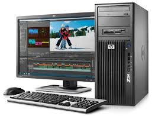

Area de Electronica y Laboratorios
Personal a cargo-- Lic. en Informatica Administrativa: Moises Porfirio Gonzalez
Mision y vision
Direccion de Infraestructura Academica
Reglamento Laboratorios y Talleres
**Laboratorios del CU**
Laboratorio de Electronica y fisica

1 Electronica
EL laboratorio de electronica fisica se ezpecializa para las materias enfocadas con electronica.
EL laboratorio de fisica cuenta con una varias de elementos que ayudan con utilizacion tales como
multimetros, fuentes, osiloscopios entre otros elementos con los cuales se pueden realizar los diferentes trabajos
Laboratorio de Desarrollo de Software
1 Desarrollo de Software
EL laboratorio de desarrollo se ezpecializa para las materias enfocadas con desarrollo.
EL laboratorio de desarrollo de sotfware trabaja con lo que es un amplio catalogo de computadoras
con las cuales se pueden realizar diferenetes trabajos que tienen que ver con el desarrollo de sotfware
Laboratorio de Redes
1 Redes
EL laboratorio de redes se ezpecializa para las materias enfocadas con redes.
EL laboratorio de redes cuenta con un amplio catalogo de computadoras de lad cuales
podemos destacar que en su mayoria con computadoras Mac y se pueden desarrollar trabajos de redes
Laboratorio de Interaccion Hombre-Máquina
1 Interaccion
EL laboratorio de interaccion se ezpecializa para las materias enfocadas con interaccion.
EL laboratorio de interaccion cuenta con varios equipos de computo con los cuales se puede
realizar trabajos de la indole de interaccion Hombre-Máquina
Laboratorio de Arquitectura de Computadoras

1 Arquitectura
EL laboratorio de arquitectura se ezpecializa para las materias enfocadas con arquitectura.
EL laboratorio de arquitectura se enfoca en todo lo de la arquitectura de Computadoras.